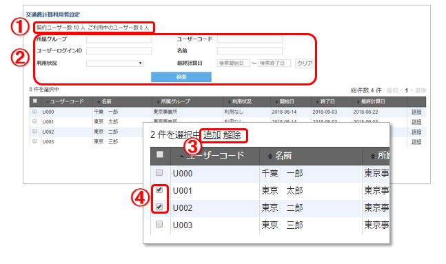

管理者の操作方法¶
ログイン¶
- ログインは こちらのページ からできます。
- ユーザー、グループ管理者の場合は、GPS Punch!のアプリと同じアカウントでログインします。
- システム管理者の場合は、契約時にお伝えしたアカウントでログインします。

メイン画面¶
下記のメニューから機能を選択できます。

- 交通費を利用するメンバーを設定できます。(システム管理者のみ)
- 交通費を確定したメンバーへの承認作業ができます。
メンバーの利用設定をする¶
システム管理者のみ、設定ができます。
- メニューから交通費利用者設定に移動します。
- 利用させたいメンバを追加します。

- 交通費自動計算の契約ユーザー数と、利用中ユーザー数が表示されます。
- グループやメンバーを指定して表示を絞り込むことができます。
- チェックを入れたメンバーを追加、あるいは解除することができます。
- 追加、または解除したいメンバーにチェックを入れます。
メンバーの交通費申請を承認する¶
- メニューから交通費承認に移動します。
- メンバを選択して、月間の申請内容を確認します。
- 問題がなければ承認ボタンを押します。
- 承認したい年月に移動できます。
- グループやメンバーを指定して表示を絞り込むことができます。
- 「詳細」を押すと、ユーザー毎の交通費情報を見ることができます。